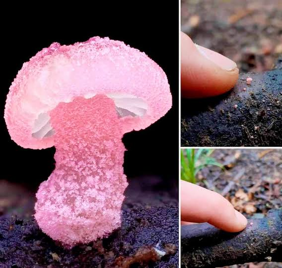

Cotilleos recientes.
Anciana descubre un nuevo hongo creciendo en su nevera.
Doña Juana de 70 años, descubre que se dejo un tomate cortado a la mitad en el fondo de la nevera hace más de 20 años, y llama a científicos, porque descubre que el tomate tiene "bichos extraños" que se mueven haciendo zigzag, los científicos lo declaran como un nuevo hongo capaz de moverse, llamado platybusmobilis.
